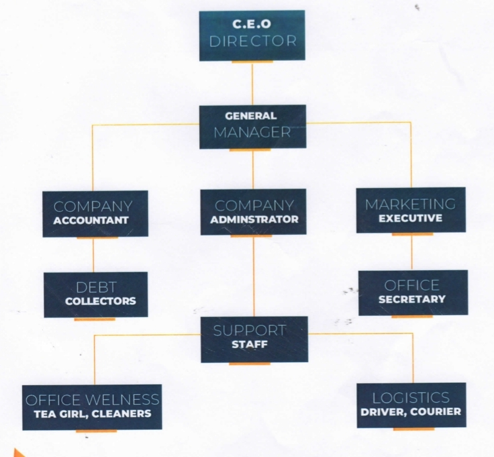
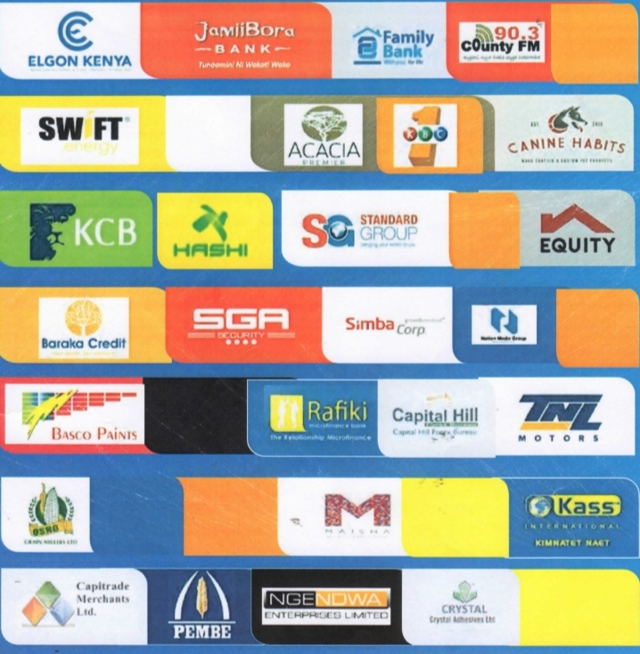

.png)
Your trusted partner in debt recovery and financial consultation.
We offer services such as:
Our debt recovery service is designed to recover owed amounts from individuals and businesses effectively. We employ a range of strategies, including negotiation and legal methods, to maximize recovery rates. Our team understands that each case is unique, so we tailor our approach to fit the specific circumstances of each debtor. By maintaining a professional and respectful dialogue, we work to recover funds while preserving the relationships you have with your clients or customers.
Our consultation services offer personalized financial advice that helps individuals and businesses navigate their debt situations. We assess your current financial status, identify potential risks, and provide actionable strategies to manage and reduce debt. Whether you are dealing with overwhelming personal debt or business liabilities, our experienced consultants will guide you through the complexities, ensuring you understand your options and can make informed decisions.
Debt surveillance involves monitoring the financial activities of debtors to track their payment behaviors and account statuses. Our team uses advanced tools and techniques to gather data, enabling us to provide you with real-time insights into your accounts. This proactive approach allows for timely actions to be taken when necessary, helping you stay ahead in managing outstanding debts and reducing your financial exposure.
Our asset research service specializes in locating hidden assets that can be utilized for debt recovery. Utilizing various investigative techniques and databases, we identify properties, bank accounts, and other financial resources that belong to the debtor. By uncovering these assets, we empower you to take more effective recovery actions, increasing the chances of obtaining the funds you are owed.
Investigation and skip tracing are critical services for locating individuals who may be hard to find. Whether they have moved, changed jobs, or are intentionally evasive, our team employs advanced technology, public records, and investigative skills to track them down. This service is essential for creditors seeking to recover debts from individuals who have become unreachable, ensuring that no stone is left unturned in the recovery process.
Our reconciliation service ensures that all financial records are accurate and up-to-date. We assist businesses in aligning their accounts with those of their debtors, resolving any discrepancies that may exist. By performing detailed audits and regular updates, we help maintain clarity in financial transactions, which is vital for effective debt management and ensuring smooth interactions with all parties involved.
We provide professional process serving services to ensure that legal documents are delivered accurately and in a timely manner. Our trained process servers understand the legal requirements and protocols involved, guaranteeing that your documents are served correctly. This service helps maintain the integrity of your legal proceedings and ensures that all parties are informed in accordance with the law.
Our debt collection services focus on ethical and effective recovery methods. We work closely with debtors to negotiate reasonable payment plans that respect their situations while ensuring that you recover what is owed to you. Our approach prioritizes maintaining positive relationships, as we believe that amicable resolutions are often the most beneficial for both parties.
ITOTYA was registered in the year 2005 and incorporated under the Companies Act on the 20th June 2012. The company is a medium-sized, indigenous entity, locally owned and managed by Kenyans.
We are proud of our contribution to the development of our country's economy, stemming from our analysis of financial flows among economic agents. We distinguish ourselves from competitors through our friendly approach to debtors who are temporarily unable to pay.
Our corporate culture is built on 3 core values:
The utmost satisfaction of our customers is the supreme aim of our activity and the foundation upon which we build our future. We aspire to achieve excellence in serving our customers.
We pay particular attention to our employees, as they are the pride and joy of our company. We train them to excel in day-to-day interactions with customers, emphasizing speed, quality of service, and the philosophy that "the customer is always right."
We adhere to legal and moral standards in every aspect of our operations, placing the utmost importance on customer confidentiality and trust.

We strive to give our clientele the best competitive rates at all times.
Our billing and fees approach to our services is based on mutual agreement and understanding between us and our clients.
Our rates are as follows:
Please note that all charges are subject to negotiation based on the specifics of each case.
Our staff helps grow our professional relationships with our clients thus providing the highest level of service
As a start up company,ITOTYA GENERAL AGENCIES.ltd has developed an organizational strcture to focus on its clients' requirements to grow the business while ensuring sustainability.Our team compromises highly qualified,professional, and competent staff who help grow professional relationships our clients while providing the highest level of services.
Here is a visual represenataion of our company's hierachy
At ITOTYA GENERAL AGENCIES.ltd we are proud to be associated withe the folliwng esteemed clients and look forward to offer better and more satisfactory to them and to others in our quest in advancing abd developing
Over the past 10 years we are proud to have offered exemplary services and solutions to multinational,financial,manufacturing,communications,Institutional and hospitality companies,NGOs as well as Academic and training institutions
Here, We are proud to showcase some our most recent clientele amongst others
